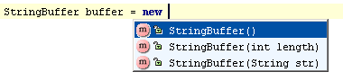
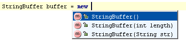

new keyword,
to instantiate an object of the expected type. For example, type

and press &shortcut:SmartTypeCompletion;:

The SmartType code completion may be used after the
new keyword,
to instantiate an object of the expected type. For example, type
and press &shortcut:SmartTypeCompletion;:  |